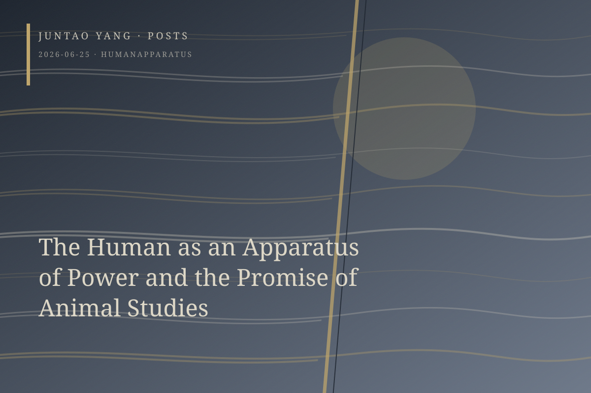

<content>
The “human” as a discursive apparatus was an invention of the eighteenth-century Enlightenment, devised to articulate and advance its grand political project in the name of rights. Enlightenment thinkers mobilized, or at times simply appropriated, theology in order to advance “natural rights,” a statement that was prescriptive and performative at its core.
Although theology retained the privilege of terminating further questions, the Enlightenment still required a foundational subject when it secularized this inheritance. The “human” thus came into being. This apparatus claimed, or implied, that in granting universal rights to human beings it was also empowering a universal humanity. It universalized and constituted the subject at the same time. Yet the domain of the “human,” demarcated by particular groups in a particular historical period and governed by constantly shifting boundaries, was never a neutral category. It was a widely deployed mechanism of power that legitimized violence outside itself through a dialectic of inclusion and exclusion.
Seen in this light, humanitarianism—the apparent opposite of such violence—and the progressive projects armed with it amount to reckonings conducted within the same convenient apparatus. With every performance of protest and defense, they consolidate its apparently indispensable naturalness. To be sure, humanitarianism has advanced progressive causes by expanding the borders of the “human”: proletarians, women, racialized minorities and minoritized groups all declare that “we are human first.” Sympathy moves readily along the axis of identification with a shared species-being. Yet this expansion eventually reaches a boundary. Only humans have rights, and the proposition retroactively produces an immensely expansive zone in which rights do not count. The question of abortion that haunts practical ethics exposes a fault line within the apparatus, one formed when the Enlightenment project articulated itself through theology.
The arbitrariness of the apparatus reappears when a fetus may be recognized as a member of the human species while its status as a bearer of rights remains contested. The politics of animal protection, extended from arguments over such boundary cases, has tentatively reached the apparatus’s outer edge and may contain the force of its self-disintegration. Animal advocates confronting anthropocentric objections bear an additional burden of argument precisely because animals stand outside the apparatus of the “human.” Abolitionist antispeciesists must therefore do more than advance their own political agenda: they also assume responsibility for a reckoning with humanitarianism itself.
Finding a new ground for this political project beyond the humanitarian defense of empathy matters far more than it may appear, even if every new ground risks becoming another trap. The failure of representation may finally disclose that the apparatus cannot be grounded at all.
</content>
June 25, 2026
The Human as an Apparatus of Power and the Promise of Animal Studies
The Human is an Enlightenment apparatus that universalizes rights by policing their boundary; animal politics may press that apparatus toward its point of breakdown.
